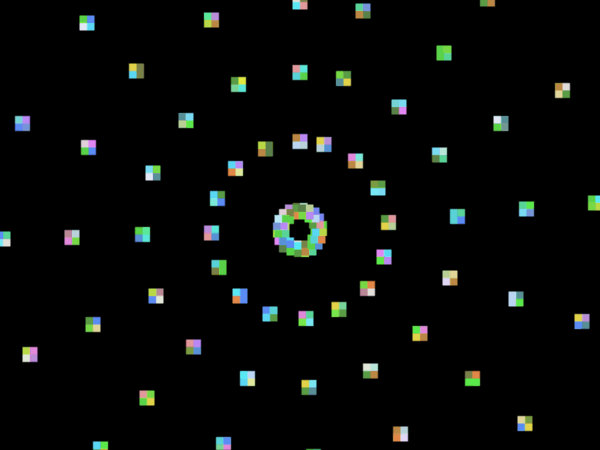
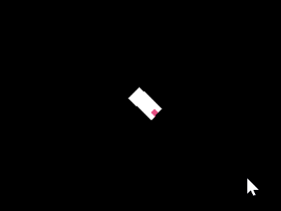
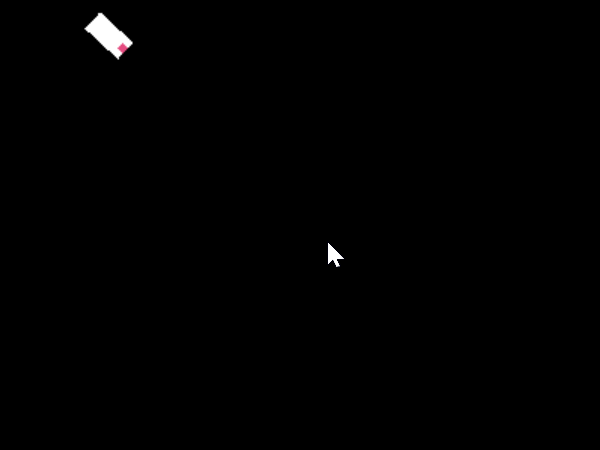
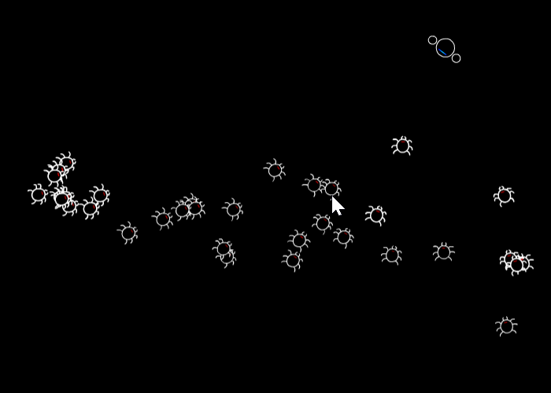
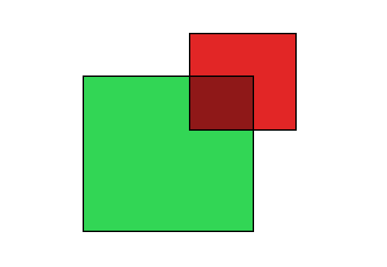

I work on AI + dev tools.
When I was making games, I found myself using a lot of the same functions over and over. They are quite simple, but I thought it interesting how they popped up everywhere and how conveniently I could make complex behaviors by combining them. I ended up with about 40 functions in a utility class that I could reach into like a bag of tricks. You can find a handful of them below, converted to JavaScript, along with a short description and a visual of what they can do.
I used run to move objects in a given direction. I used it for virtually anything that moved relative to a variable direction: the player, enemies, projectiles, particles, and even floating text boxes.

// Moves obj towards its current rotation at its current speed.
function run(obj) {
obj.x += Math.cos(obj.rotation)*obj.speed;
obj.y += Math.sin(obj.rotation)*obj.speed;
}
A variation I used of this function is project, which returns the object's future location. This can be useful for collision detection.
// Like run(), but returns an object and uses an independent rotation and distance.
function project(obj, rot, dist) {
return {x: obj.x + Math.sin(rot)*dist,
y: obj.y + Math.cos(rot)*dist};
}
The run function requires the angle to be calculated, which I often did using rotateTo. It points one object towards another, such as pointing the player towards the mouse cursor.

// Rotates obj to point at target.
function rotateTo(obj, target) {
obj.rotation = Math.atan2(target.y - obj.y, target.x - obj.x);
}
A more complicated use of rotateTo is for objects that home in on a target. I used rotateToGradual for enemies that are trying to tackle the player but also for missiles. The idea is similar to rotateTo, but it can only turn so much each frame. (There are several different ways to code this, but this is one I used for homing missiles.)

// Gradually rotates obj to point at target using obj.turnSpeed.
function rotateToGradual(obj, target) {
let goal = Math.atan2(target.y - obj.y, target.x - obj.x);
obj.rotation += Math.sin(goal - obj.rotation) * obj.turnSpeed;
}
A classic function indeed, but I found ways to use that I wouldn't have expected. For example, it can be used as a quick and dirty way to do collision detection in a top down shooter by checking if the distance from the target is less than the bullet radius.

// Returns distance between two objects.
function distance(objA, objB) {
return Math.sqrt(((objA.x - objB.x)*(objA.x - objB.x))
+((objA.y - objB.y)*(objA.y - objB.y)));
}
I used overlapping to see if two rectangular objects are intersecting as another fundamental way to perform simple collision detection.

// Returns true or false if overlapping.
// NOTE: Assumes shapes are rectangular and not rotated.
function overlapping(objA, objB) {
// Check x axis.
if(objA.x < (objB.x + objB.w) && (objA.x + objA.w) > objB.x) {
// Check y axis.
if((objA.y + objA.h) > objB.y && objA.y < (objB.y + objB.h)) {
return true;
}
}
return false;
}
A minor variation is for checking whether a point is contained inside an object.
// Check if point overlaps with rectangle.
function intersectPointRectangle(px, py, rect) {
if(px >= rect.x && px <= rect.x + rect.w) {
if(py >= rect.y && py <= rect.y + rect.h) {
return true;
}
}
return false;
}
I needed to snap numbers to a specific step. This can be useful for snapping coordinate values to the nearest tile index or for making scores more pretty (e.g., by snapping it to the nearest 2 or 50).

// Snaps the value x to the current increment of step. Ex: snap(144, 5) results in 145.
function snap(x, step) {
return Math.round(x / step) * step;
}
See? Simple, but useful.
If you want more random game development goodness, check out: